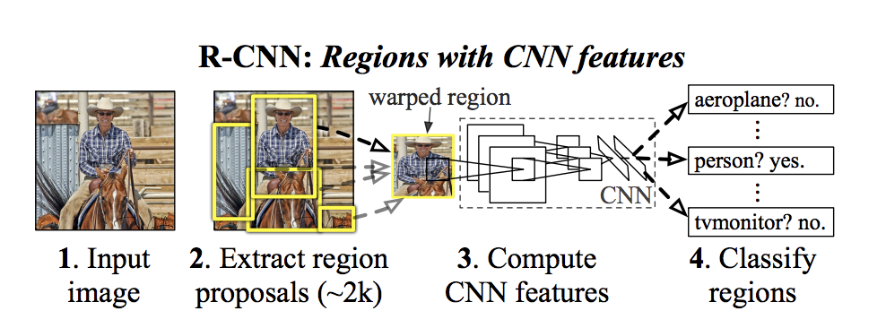
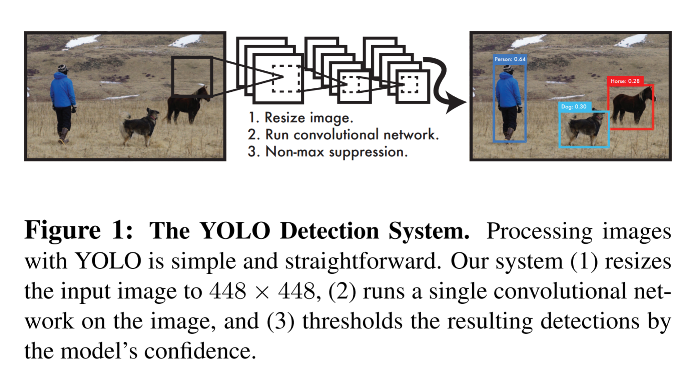

오늘의 흐름
두 걸음
오늘의 질문
‘무엇이 있다’ 와 ‘어디에 있다’ 는
어떻게 다른 문제인가?
분류기 하나를 이미 가지고 있다. 그걸로 위치까지 알아내려면 무엇을 더 해야 하나.
1부 · 탐지
질문이 세 번 바뀐다
맨 오른쪽이 지금 가장 뜨거운 연구다 — 12주차 멀티모달에서 다시 만난다.
2012년 AlexNet 을 기점으로 갈라진다
Object Detection in 20 Years: A Survey
객체 탐지 20년 로드맵 — 2012년 AlexNet 이후 딥러닝 기반으로, one-stage 와 two-stage 로 갈린다
오른쪽이 두 갈래로 갈린다 — 아래가 R-CNN 계열(two-stage), 위가 YOLO 계열(one-stage).
R-CNN — 잘라서 물어본다
2014 · two-stage
R-CNN 4단계 — 입력, 영역 제안 2천 개, CNN 피처 계산, 영역 분류
구조적인 약점
사슬이 끊긴다
경사하강은 손실에서 입력까지 하나의 사슬로 흘러야 한다. 스테이지를 자르면 그 사슬이 끊긴다.
두 단계를 아무리 잘 결합해도 끊긴 자리에서 성능이 뭉개진다 — 그래서 다음 발상이 나온다.
두 단계를 아무리 잘 결합해도 끊긴 자리에서 성능이 뭉개진다 — 그래서 다음 발상이 나온다.
YOLO — 한 번만 본다
2016 · Joseph Redmon · one-stage
YOLO Detection System — 448 리사이즈, 합성곱 한 번, 신뢰도로 걸러내기
박스를 만드는 단계 자체를 없앴다 — 처음부터 균질한 격자로 자른다
칸 하나가 박스와 클래스를 동시에 내놓는다 — 한 텐서 안에서
그래서 역전파가 입력까지 한 사슬로 이어진다
이름은 하나, 만든 사람은 여럿
2026년 9월 기준버전 번호는 성능 순위가 아니다. 분야에 따라 옛 버전이 더 나은 경우가 흔하다.
울트라리틱스 계열은 AGPL-3.0 — 제품에 넣으려면 소스를 전부 공개하거나 상용 라이선스를 사야 한다.
실습 데이터
AI Hub
한국어와 한국 문화를 학습시킬 데이터는 외국에서 만들어 주지 않는다.
과기부가 몇 조를 들여 만들었다. 전 국민이 모여 라벨링했고, 연구 용도로는 거의 전부 무료다.
오늘 쓸 것 — 교통문제 해결을 위한 CCTV 교통 영상.
계정을 지금 만들어 둘 것. 기말 발표 데이터의 출발점이다.
계정을 지금 만들어 둘 것. 기말 발표 데이터의 출발점이다.

AI Hub 데이터 분류 — 한국어, 영상이미지, 헬스케어, 재난안전환경, 농축수산, 교통물류

CCTV 교통 영상 — 도로와 차량
한 세트 = 두 파일
박스와 번호
"bbox": [ x, y, w, h ]
"category_id": 1 승용차
"category_id": 4 버스
"category_id": 7 보행자
"category_id": 1 승용차
"category_id": 4 버스
"category_id": 7 보행자
5주차 외벽은 사진 한 장에 답이 하나였다. 탐지는 답이 여러 개고 각각에 위치가 붙는다.
실습에서 하는 일
우리는 학습시키지 않는다
YOLOv5 by ultralytics
YOLOv5 는 우리 CCTV 데이터를 본 적이 없다. 그런데도 차와 사람을 찾아낸다.
한계
격자보다 큰 물체는 못 본다
도구를 고르는 기준은 순위표가 아니라 우리 데이터의 생김새다.
CCTV 는 카메라가 고정돼 물체 크기 범위가 정해져 있다 — 그럼 빠른 YOLO 가 낫다.
CCTV 는 카메라가 고정돼 물체 크기 범위가 정해져 있다 — 그럼 빠른 YOLO 가 낫다.
실무
이건 다시 연구하지 않는다

완제품 탐지기가 놓인 선반을 지나쳐 도시 지도를 바라보는 사람
예전에는
이게 정말 사람인지 판단하려고 회귀도 돌리고 통계도 내고 별의별 짓을 다 했다.
지금은
상용 감시 도구도 “YOLO 몇 버전이냐” 만 물어보면 된다. 가중치는 분야별로 계속 공개된다.
여러분이 만들 것은 탐지기가 아니다.
탐지 결과로 무엇을 알아낼지 — 거기부터가 도시공학의 몫이다.
탐지 결과로 무엇을 알아낼지 — 거기부터가 도시공학의 몫이다.
2부 · 분할
물건을 세는가, 땅을 칠하는가
도시공학에서 제일 많이 쓰는 것이 분할이다 — 도시 환경 분석에 그대로 들어간다.
왼쪽을 보고 오른쪽을 그린다
AI Hub · 토지피복지도 항공위성 이미지
왼쪽 항공 영상 입력, 오른쪽 사람이 그린 토지피복 라벨
이 정도로 정교한 이유 — 한 과제당 1년에 30억~70억. 수백에서 천 명이 달려들었다.
사람이 이미지 위에 일일이 그린 것이다. 라벨링 노동이 곧 데이터의 값어치다.
사람이 이미지 위에 일일이 그린 것이다. 라벨링 노동이 곧 데이터의 값어치다.
라벨은 그림이 아니다
TIFF 라스터 · 1채널 · 픽셀에 코드컬러로 보이는 건 그 코드에 색을 입혀 출력한 것뿐이다.
라스터는 층을 원하는 만큼 만들고 메타에 좌표계까지 넣는다 — 지도에 그대로 얹힌다.
가로로 건너뛰는 선이 핵심이다
실습 구현 · 512×512×3 → 512×512×1내려가며 잃어버린 세밀한 위치 정보를 같은 높이로 이어 붙인다. 이게 없으면 경계가 뭉개진다.
문제를 단순하게 만든다
아홉 클래스 → 건물이냐 아니냐이 픽셀이 건물이냐 아니냐 — 그래서 손실은 binary cross entropy. 100 에폭.
실습에서 건물 대신 산림이나 도로로 바꿔 돌려 볼 것. 코드 한 줄이다 — 어떤 클래스가 잘 맞고 안 맞는지가 그대로 발표 거리다.
그 뒤의 분할
DeepLabV3+ · HRNet · Segment AnythingDeepLabV3+

DeepLabV3+ 인코더–디코더 구조
Segment Anything · 2023

SAM — 프롬프트로 지시하면 그 자리를 잘라낸다
SAM 은 무엇을 찾을지 미리 정해 두지 않는다. 점을 찍거나 박스를 치면 그 자리를 잘라낸다.
이 “시키는” 방식이 11주차 프롬프트, 12주차 멀티모달로 이어진다.
이 “시키는” 방식이 11주차 프롬프트, 12주차 멀티모달로 이어진다.
3분 · 옆 사람과
하나만 골라 이야기해 보자
Q1 우리 동네 CCTV 에 YOLO 를 붙인다면, 격자 크기를 어떻게 정하겠는가?
Q2 탐지 결과는 답이 아니라 새 변수다. 차량 수와 보행자 수가 시간대별로 나오면 무엇을 분석하겠는가?
Q3 항공 영상 분할로 시계열 변화를 본다면, 어떤 클래스의 증감이 도시 정책과 이어지겠는가?